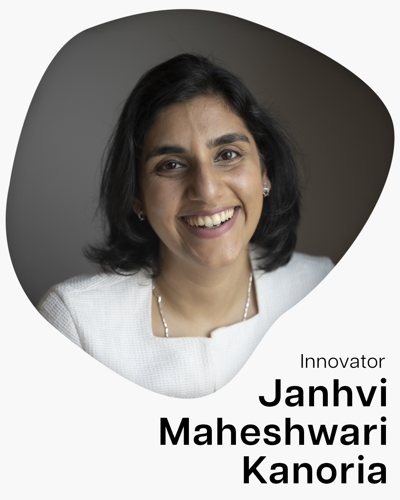
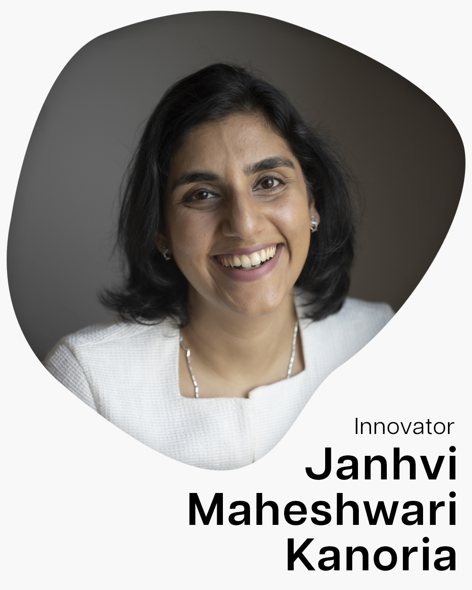
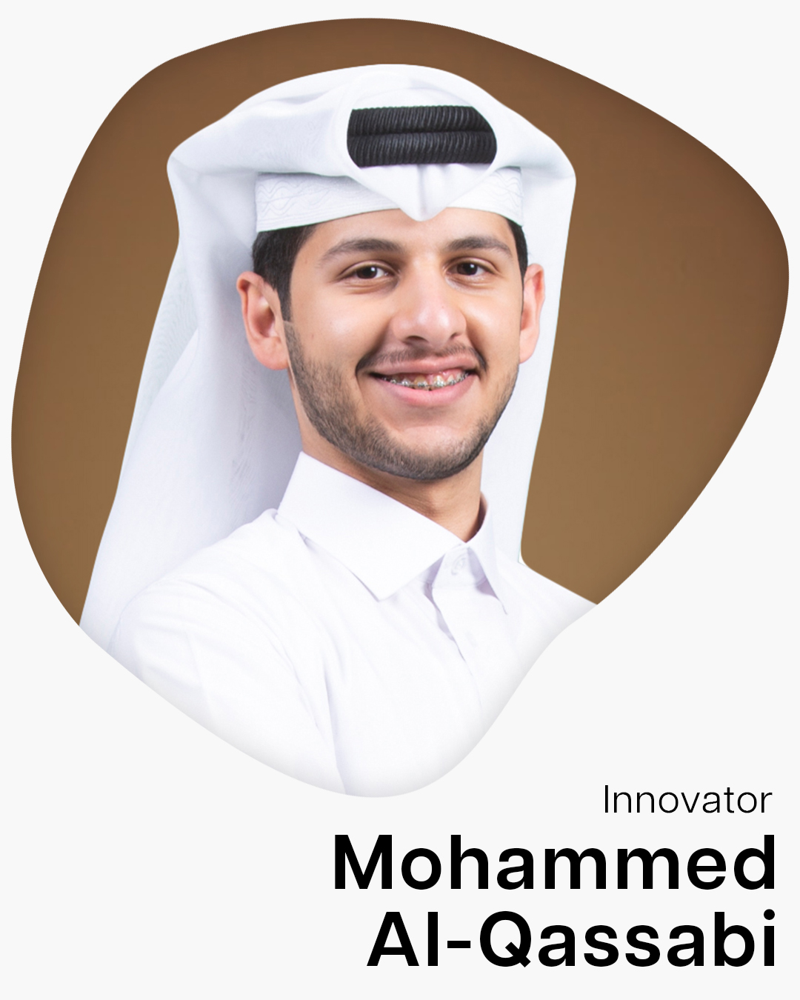
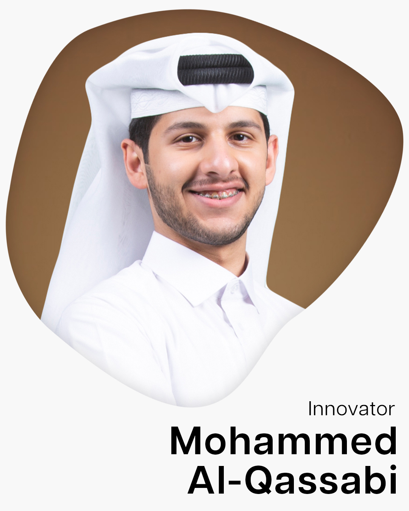
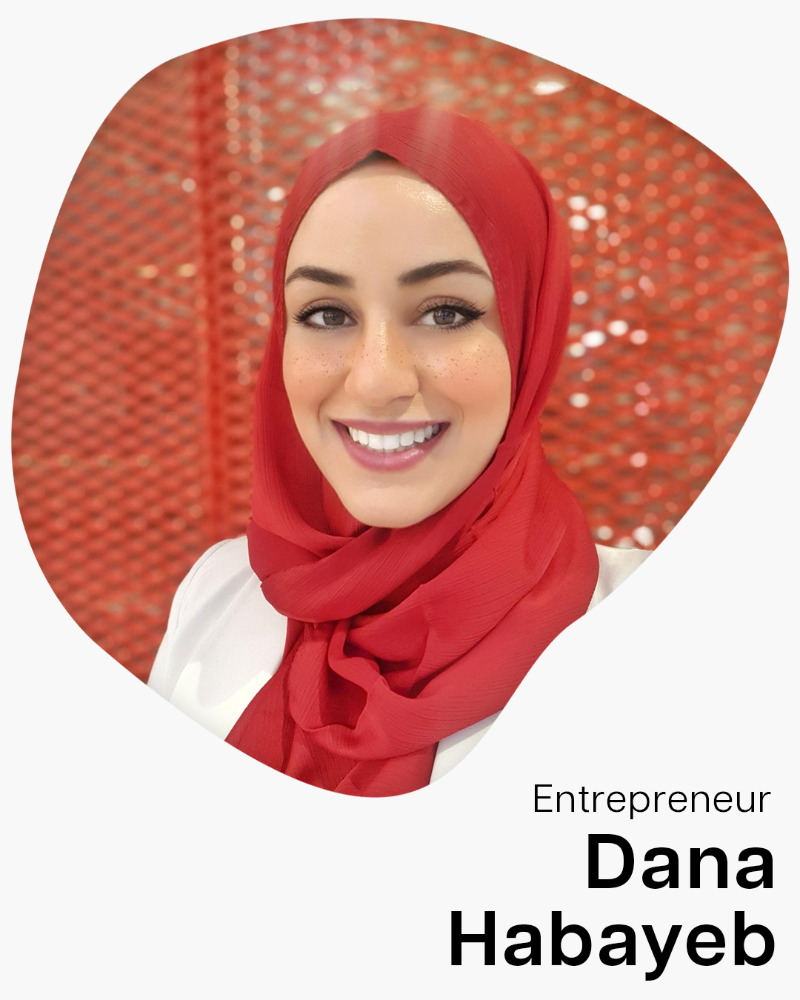
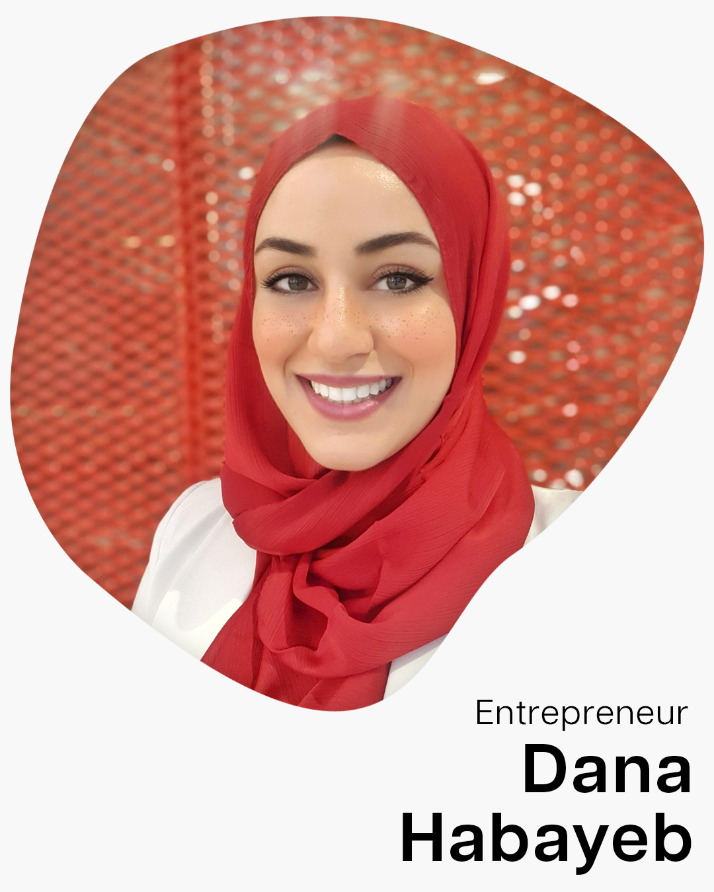
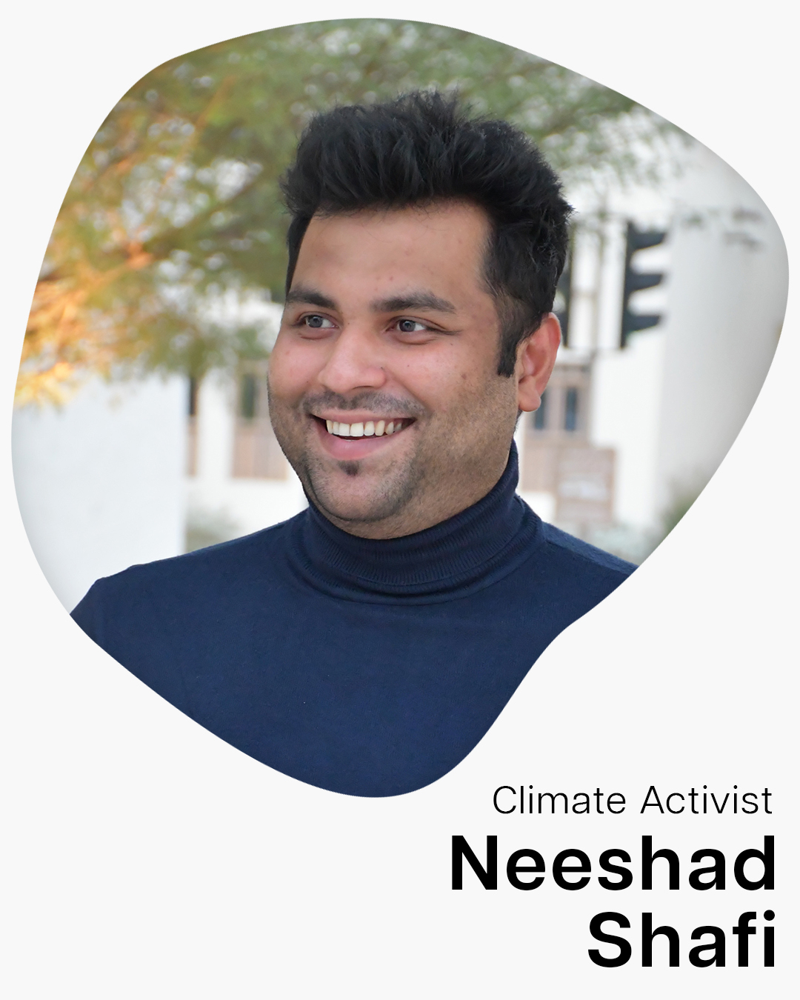
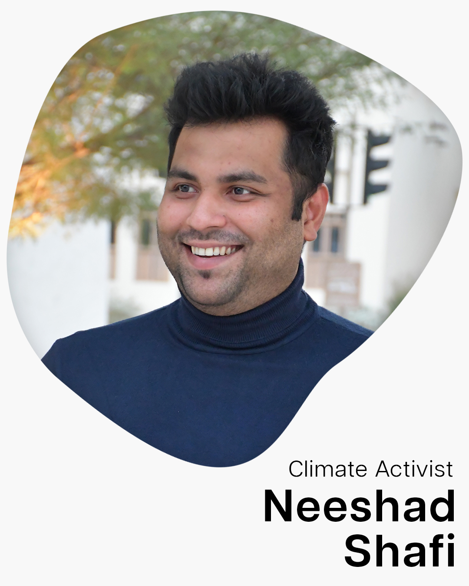
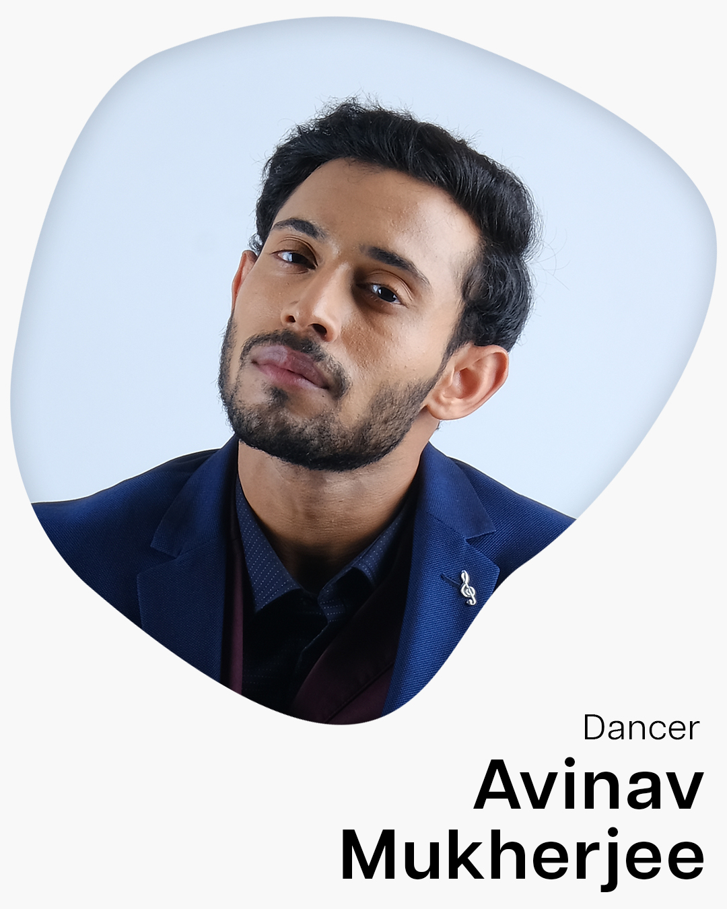
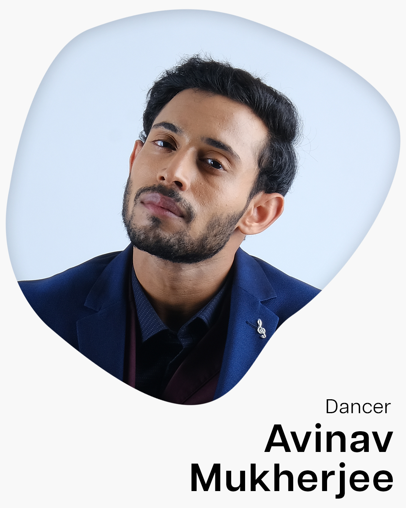

Theme
Changing Currents conceptualizes the unpredictability of life. It doesn't sympathize with how carefully we've planned, how hard we've struggled, or how deeply we care, we will forever be objects of its tide. The past few years allowed us to experience this immutable reality at its probable worst. But, they've also been beautifully, almost divinely inspirational. In the direst of circumstances, we chose to bolster every aspect of the human condition.
Entrenched dogmas radically reinvented, trillions of dollars spent in infrastructure bills and climate conservation efforts, oppressive policies wiped out across the world, politically significant outrage mobilized against structural barriers. The world is evolving the currents that run the deepest, and so are we. In our quest to foster meaningful innovation, we present to you an event like none before, to make those currents change, change for the better.
Changing Currents conceptualizes the unpredictability of life. It doesn't sympathize with how carefully we've planned, how hard we've struggled, or how deeply we care, we will forever be objects of its tide. The past few years allowed us to experience this immutable reality at its probable worst. But, they've also been beautifully, almost divinely inspirational. In the direst of circumstances, we chose to bolster every aspect of the human condition.

Entrenched dogmas radically reinvented, trillions of dollars spent in infrastructure bills and climate conservation efforts, oppressive policies wiped out across the world, politically significant outrage mobilized against structural barriers. The world is evolving the currents that run the deepest, and so are we. In our quest to foster meaningful innovation, we present to you an event like none before, to make those currents change, change for the better.

 

 

 

 

 
